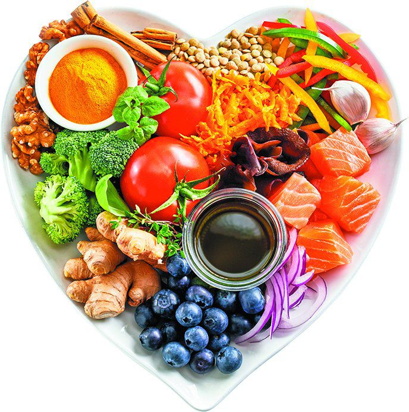
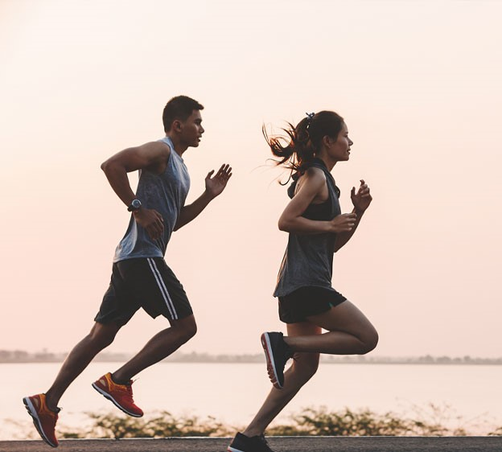

Nutrição e Práticas Saudáveis
Sobre este projeto...
No âmbito da disciplina de Educação Física, foram realizados no presente ano letivo 2022/2023 alguns trabalhos que são englobados no projeto aqui apresentado. Em termos gerais, o projeto pode ser dividido em duas partes: uma primeira com a disponibilização de informação e uma segunda baseada na análise das práticas e hábitos da totalidade dos alunos do 12.º ano da Escola Secundária de Paredes.


Como está dividido...
Nas páginas abaixo mencionadas encontram-se informações sobre os três pilares fundamentais da saúde: a nutrição, o exercício físico e o descanso:
- Nutrição
- Exercício Físico
- Descanso
- Análise 12.º ano 2022/2023
Como mencionado, será posteriormente disponibilizada a análise. Poderá ser usada, posteriormente, como referência e indicador do estado dos nossos alunos. A título de exemplo, poderá ser aplicado em anos seguintes de forma a acompanhar a evolução do conhecimento e autoconsciência dos alunos nos referidos domínios, ao longo da sua passagem pela escola, ou ainda comparar os mesmos fatores em alunos da mesma idade em anos distintos.
Nota: em conformidade com a privacidade de cada um, os dados recolhidos ao longo de todo o projeto não são correlacionados com a identidade de cada um, nem tal seria possível sem autorização expressa do próprio, pelo que os valores obtidos são fruto de métodos de análise globais e portanto, referentes à totalidade dos alunos como um conjunto. Resumidamente, os dados recolhidos são completamente anónimos.